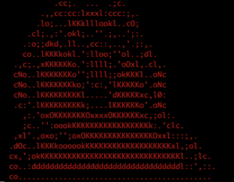
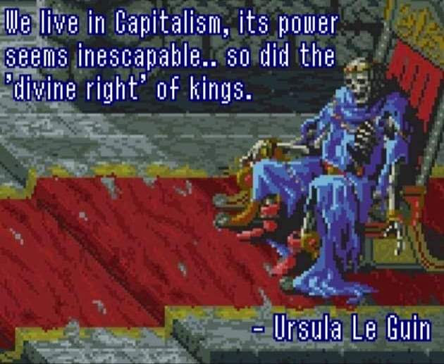

Acrylic Auth
| Spaceman Sedore
Home
|
Blog Page
|
Art
|
InfoSec
Hi I'm Eric (he/him) :)
I'm a cyber security researcher & traditional artist
You'll find my work in both disciplines here
If you want to support any of my work you can do so on
ko-fi

